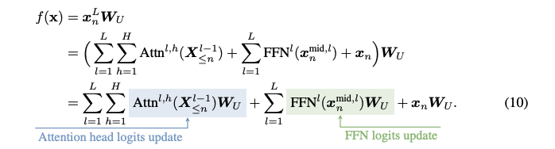
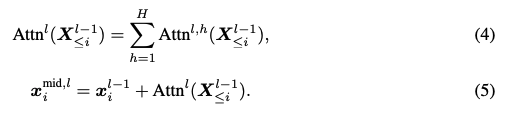
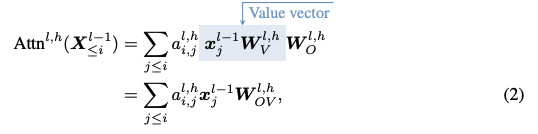
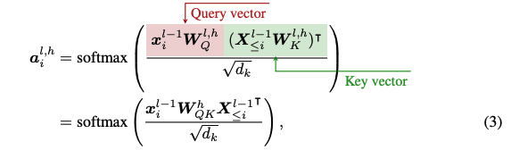
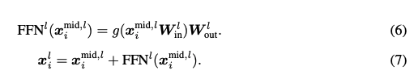
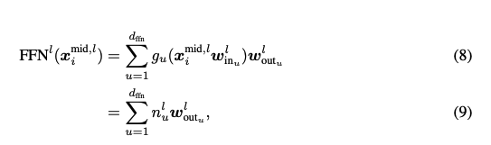

Formulation
October 4, 2024 • Alex Loftus, Michael Ripa, Dmitrii Troitskii
We now take a break from exploring new particular new methods to zoom out and think: What exactly are the objects we are working with? Can we get specific about exactly what we're doing, and will it lead to new insights and research directions?
Creating a common notation for the mathematical structure of the transformer, and being careful about exactly what we mean when we talk about the residual stream, attention, and feedforward networks gives us a unified mental map that we can use when we think through other papers.
Our central question in this class isn't: 'what are the details of this method'. Instead, it is 'what is the overall structure of the transformer'.
We will focus on three papers. The first,a primer on transformer language models by Javier Ferrando, is a review paper that serves to create a common notation around techniques we will encounter for the rest of the course. The second, a mathematical framework for transformer circuits, was the anthropic post that introduced the idea of the residual stream, \( W_{OV} \) and \( W_{QK} \) circuits, and other fundamental ideas. Like other anthropic posts, it focuses on toy models and intuition. It focuses almost entirely on the attention operation, ignoring feedforward networks for future work. The third, Analyzing Transformers in Embedding Space by Mor Geva, is the second in a pair of papers that follow up on the anthropic post to extend them to include feedforward networks. This paper, however, focuses on extending the method developed in the first paper to include every weight matrix in the model, avoiding the use of calculations dependent on activations.
The anthropic line of papers in particular inherit from the distill circuits thread, which attempted to reverse engineer vision models. The framework paper was the first to switch to language models.
a primer on transformer language models
This primer was published recently and serves to unify mathematical notation for techniques described in the interpretability literature. We will focus on everything prior to section 3, since the rest of the paper focuses on specific applications.
The authors are Javier Ferrando, Marta Ruiz Costa-jussa, Gabriele Sarti, and Arianna Bisazza. Javier is at Universitat Politecnica de Catalunya in Barcelona. He spent the summer at Berkeley, I spoke to him a few times while I was in Barcelona this summer.
The final author, Marta Ruiz Costa-jussa, is a research scientist at FAIR Meta in Paris; she was a researcher at Ramon y Cajal / ERC at the Universitat Politecnica de Catalunya for seven years prior. She's been working on safety and gender bias in LLMs recently.
The other authors, Gabriele Sarti and Arianna Bisazza, are in the netherlands (University of Groningen).
There have been a few primers on this topic in the past, but interpretability moves quickly and notation hasn't been particularly standardized, to the best of my knowledge. This paper serves to formalize many of the ideas we will explore in the mor geva paper and in the mathematical framework paper, so we will make sure we understand this notation first. We will then use it to describe the mor geva paper and the mathematical framework paper.
Notes
First: The primer paper is confusing to read for mathematicians because notationally, the vector \( x_i \) is considered a row vector, and consequently, linear transformations on it are right-multiplications.
\[ \mathbf{x_i} W = \begin{bmatrix} x_{1} & x_{2} & \cdots & x_{d} \end{bmatrix} \begin{bmatrix} \leftarrow \mathbf{w}_{1} \rightarrow \\ \vdots \\ \leftarrow \mathbf{w}_{d} \rightarrow \end{bmatrix} \]\( W \) has \( d \) rows and \( m \) columns. You can think of this matrix multiplication as scaling each row by its corresponding weight in \( \mathbf{x}_i \), and then summing vertically along the row axis. The output row vector is in \( m \) dimensions.
Second: There is a mathematical trick that shows we can lightly ignore the layer norm when building intuition. This is because the weights of the affine transformation can be folded into the following linear layer recursively until the end of the residual stream.
This is also true with bias vectors: we can just fold them into the weights and creating a dimension that is always 1.
Prediction as a sum of component outputs

We get to logits by passing the last token at the end of the residual stream \(x_n^L\) through the unembedding matrix \( W_u \). We can think of the output of the residual stream as a sum of the attention head outputs and of the feedforward layers. Writing this out leads to an interesting algebraic manipulation: we can simply move the unembedding matrix \(W_U\) inside the sum. This leads us to the conclusion that, at any moment along the residual stream, we can see what's happening in logit space. This is the idea behind, for instance, the logit lens.
In practice, attention and feedforward layer are calculated sequentially. The attention operation happens per-head, with each head independently summed into the residual stream, and the feedforward layer is applied independently to each position in the sequence.
Notation is as follows:
- Initial embeddings \( \mathbf{X} \in \mathbb{R}^{n \times d} \) are row vectors corresponding to a row of \( W_E \in \mathbb{R}^{\mathcal{V} \times d} \)
- The final layer residual stream state is projected into the vocabulary space via \( W_U \in \mathbb{R}^{d \times \mathcal{V}} \).
- An intermediate layer representation \( \mathbf{x}_i^l \) is the representation for token \( i \) in layer \( l \). \( \mathbf{x} \) is \( \mathbf{x}_i^0 \).
- \( \mathbf{X}^l \in \mathbb{R}^{n \times d} \) represents activations for layer \( l \)
- \( \mathbf{X}_{\leq i}^l \) is the layer \( l \) representation up to position \( i \).
Attention Block
Attention is the communication between residual stream tokens. The outputs of the attention operation are written into the residual stream.
The attention operation at the \( l_{th} \) layer is simply the sum of all attention head outputs at that layer into the residual stream.
How does attention modify a single token?
Zoom into token \( i \). The attention operation for this token at layer \( l \), head \( h \), works as follows:
- Loop through every other token in the sequence \( x_j \) for \( j \leq i \).
- Read each \( x_j \) into a space that can be writeable into the residual stream
- Weight that \( x_j \) by its attention with \( x_i \), and then write it into the residual stream
This operation can be thought of as scaling each \( x_j \) by its attention score with \( x_i \) and then transforming it into a space that can be written into the residual stream (We can also think of the transformation as happening first, because of linearity).
\[ \sum_{j \leq i} a_{i,j}^{l,h} \begin{bmatrix} \mathbf{x}_{j,1} & \cdots & \mathbf{x}_{j,d} \end{bmatrix} \begin{bmatrix} \leftarrow \mathbf{w}_{1,OV} \rightarrow \\ \vdots \\ \leftarrow \mathbf{w}_{d, OV} \rightarrow \end{bmatrix}, W_{OV} \in \mathbb{R}^{d \times d} \]
Remember that \( W_{OV} \) is low-rank: maximum rank \( n \). This is because \( W_O \) and \( W_V \) are both \( d_h \times d \). The hyperplane the columns and rows span is independent of the particular activations; there's just a different set-in-stone hyperplane for each \( W_{OV} \).
How is the attention score calculated?
The attention vector \(\mathbf{a}_i^{l,h} \) has attention values \( a_{i,j}^{l,h} \). Each are calculated by
- Reading the corresponding \( x_j \) into a space such that its dot product with \( x_i \) is monotonic with its attention score: \( W_{QK}^h x_j^{\top l-1} \)
- Taking the actual dot product of the two to get an attention value, and then normalizing by \( \sqrt{d_k} \)
- Softmaxing the result to get values between 0 and 1
I prefer to think of the attention matrix, which is a nonsymmetric adjacency matrix \( \mathbf{A} \) where the attention between token \( i \) and token \( j \) is the \( (i, j)_{th} \) entry. The vector \( \mathbf{a}_i \), calculated directly above, is the row of this matrix corresponding to token \( i \). We can also think of the individual \( \mathbf{a}_{i,j} \) getting calculated, as below. We build the matrix by adding rows to the matrix on the left, and columns to the matrix on the right.
\[ a_{i,j} \text{ is monotonic with:} \begin{bmatrix} \mathbf{x}_{i,1} & \cdots & \mathbf{x}_{i,d} \end{bmatrix} \begin{bmatrix} & &\\ & W_{QK} &\\ & &\\ \end{bmatrix} \begin{bmatrix} \mathbf{x}_{j,1} \\ \vdots \\ \mathbf{x}_{j,d} \end{bmatrix}, W_{QK} \in \mathbb{R}^{d \times d} \]
Remember that \( W_{QK} \) is low-rank: maximum rank \( n \). This is because \( W_Q \) is \( d \times n \) and vice-versa for \( W_K \). The hyperplane the columns and rows span is independent of the particular activations; there's just a different set-in-stone hyperplane for each \( W_{QK} \).
Feedforward Block

The feedforward block is applied independently to each position in the sequence. It is a two layer neural network with a nonlinearity in between. We generally project into a higher dimensional space (often \( 4d \)) and then back into the residual stream.
Pattern Detecting
We can think of the columns of \( W_{in}^l \) acting as pattern detectors over the activations. Each neuron defines how strongly its corresponding row vector in \( W_{out} \) should be activated. The result is a linear combinationn of row vectors of \( W_{out} \).
\[ \text{FFN} = g\left( \begin{bmatrix} x_{1} & x_{2} & \cdots & x_{d} \end{bmatrix} \begin{bmatrix} \top & & \top \\ \mathbf{w_u} & \cdots & \mathbf{w_{d_{\text{FFN}}}} \\ \perp & & \perp \end{bmatrix} \right) \begin{bmatrix} \leftarrow \mathbf{w_u} \rightarrow \\ \vdots \\ \leftarrow \mathbf{w_{d_{\text{FFN}}}} \rightarrow \end{bmatrix} \\ \] \[ = \begin{bmatrix} n_{1} & \cdots & n_{d_{\text{FFN}}} \end{bmatrix} \begin{bmatrix} \leftarrow \mathbf{w_u} \rightarrow \\ \vdots \\ \leftarrow \mathbf{w_{d_{\text{FFN}}}} \rightarrow \end{bmatrix}, W_{in} \in \mathbb{R}^{d \times d_{\text{FFN}}}, W_{out} \in \mathbb{R}^{d_{\text{FFN}} \times d} \]a mathematical framework for transformer circuits
Authors
This paper was authored by a team primarily from Anthropic, a prominent AI research company. The lead authors are:
- Nelson Elhage: A research scientist at Anthropic, known for his work on AI safety and interpretability.
- Neel Nanda: An independent AI safety researcher, formerly at Anthropic, with a focus on transformer interpretability.
- Catherine Olsson: A research scientist at Anthropic, specializing in AI alignment and interpretability.
Other key contributors from Anthropic include Tom Henighan, Nicholas Joseph, and Ben Mann. The paper also features contributions from a diverse group of researchers in the field of AI, including:
- Dario Amodei: Co-founder and Chief Scientist at Anthropic.
- Chris Olah: Known for his work on neural network interpretability, formerly at OpenAI and Google Brain.
- Jared Kaplan: A physicist and AI researcher, known for scaling laws in machine learning.
This collaborative effort brings together expertise from various backgrounds in AI research, safety, and interpretability.
Overview
This paper also introduces a new notation for transformers. It was published before the primer paper.
Tensor Products
The authors utilize the notion of a tensor product to describe the operations of transformers. For convenience, we will define the tensor product here. Given two matrices \( A \) and \( B \), their tensor product \( A \otimes B \) is defined as the block matrix:
\[ A \otimes B = \begin{bmatrix} a_{11}B & a_{12}B & \cdots & a_{1n}B \\ a_{21}B & a_{22}B & \cdots & a_{2n}B \\ \vdots & \vdots & \ddots & \vdots \\ a_{m1}B & a_{m2}B & \cdots & a_{mn}B \end{bmatrix} \]
Zero Layer Transformer
A zero layer transformer is a transformer with no layers. It is simply a product of the unembedding matrix and the embedding matrix.
\[ T = W_u W_E \]
The key intuition here is that this model does not move information across tokens.
One Layer Attention Only Transformer
In traditional attention, the output of an attention head is as follows:
1. Compute vector value for each token: \( v_i = W_v x_i \)
2. Compute "result" vector: \( r_i = \sum_{j} a_{i,j} v_j \)
3. Compute output vector for each token: \( h(x)_i = W_O r_i \)
We can reformulate this in a way which allows for some new intuitions using tensor products.
h(x) = (Id \otimes W_O) \cdot (A \otimes Id) \cdot (Id \otimes W_v) \cdot x
This can be rewritten as (by mixed product property):
h(x) = (A \otimes W_O W_v) \cdot x
Here, \( A = \text{softmax} \left( x^T W_{Q}^T W_K x \right) \)
Intuitions
1. Attention heads "mix" information across the residual stream. The attention head output at a particular position \( i \) is a linear combination of the residual stream up to that position.
2. Asides from softmax, all the operations in this layer are linear. If we were to fix \( A \), we would have a linear transformer.
3. W_Q and W_K always operate on the residual stream in the same way across different positions (as do \( W_V \) and \(W_O\)).
4. In a certain sense, attention heads are closed under multiplication: \[ (A^{h_2} \otimes W^{h_2}_{OV}) \cdot (A^{h1} \otimes W^{h_1}_{OV}) = (A^{h_2} A^{h_1} \otimes W^{h_2}_{OV} W^{h_1}_{OV}) \].
analyzing transformers in embedding space
Code Examples
A colab notebook exploring these ideas can be found here.Discussion Questions
- Why is it that concatenating attention head outputs and then running the result through the output weight matrrix \( W_o \) is the same as running through \( W_{OV} \) inside attention heads? (page 3 of primer, bottom of the page)
- second question